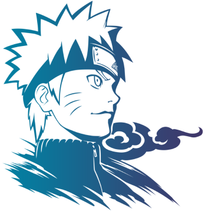

Naruto est un manga de type shonen dessiné par Masashi Kishimoto. Sa première apparition date de 1999 dans le Weekly Shonen Jump, magazine japonais dans lequel les nouveaux mangas prometteurs apparaissent, et s’est finis dans ce même magazine en 2014, pour un total de 72 tomes. Puis a été adapté en série animé en 2002 par le studio Pierrot.
250 millions est le nombre d’exemplaires vendus dans le monde entier, autrement dit Naruto est un incontournable dans son genre, c’est le 3eme dans le classement des ventes mondial. Son énorme succès a même donné naissance à des films et des jeux vidéo qui ont tout aussi bien marché, La franchise Naruto est une réussite de A à Z.
Mais qu’est-ce qu’est Naruto ? Naruto est le nom éponyme du protagoniste à la coiffure blonde et aux yeux bleus, vêtu dans une combinaison orange que vous avez surement déjà du apercevoir une fois, peu importe votre âge.
Naruto est orphelin et a eu une enfance terrible. Enfermé avec un “demon” à l’intérieur de lui, qui a dans le passé attaqué son village. Tout Konoha le déteste et le méprise, mais il a un rêve celui de devenir “Hokage” le chef ninja de son village et ainsi prouver à tout le monde sa juste valeur et gagner leur respect. Mais la route sera longue, accompagné de ses amis, il fera la rencontre de beaucoup d’antagonistes plus dangereux les uns des autres.
A travers ses aventures Naruto nous fait passer de la tristesse à la joie, de la haine à l’amour et inversement. Un univers complet avec une touche d’humour, Naruto est une vraie leçon de vie dans son entièreté que ce soit par les histoires des personnages ou le déroulement du manga.
